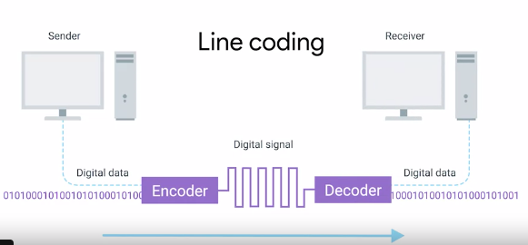
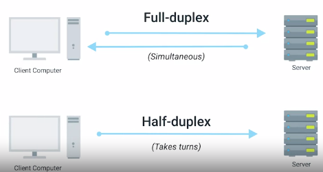
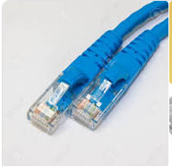
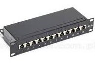

Index
PHYSICAL LAYER
Moves ones and zeroes from one end to another.Transports bits -> 1 or 0
Modulation : A way of varying the voltage of the charge moving across the cable. Line Coding.
1 and 0 are understood thru these modulations
10 Billion 1 and 0 across a single network cable every second.

Twisted pair cable : Pairs of copper wires. protects against electro magnetic interference. single conduit. avoid crosstalk.
Cat6 - 8wires
Duplex Communication : The concept that information can flow in both directions across the cable.
One pair for one direction and another
FULL DUPLEX
HALF DUPLEX

RJ45 network : registered jack ,plug - start ,end point (most common)

Ports : Directly attached to devices that make up a computer network. Plugs connect here
Switches have many ports
Desktops : 1
Two small leds
Link light : Cable is properly connected
Activity light : Data transmission was active
Patch Panel : Contains many network ports
Ports : Directly attached to devices that make up a computer network
